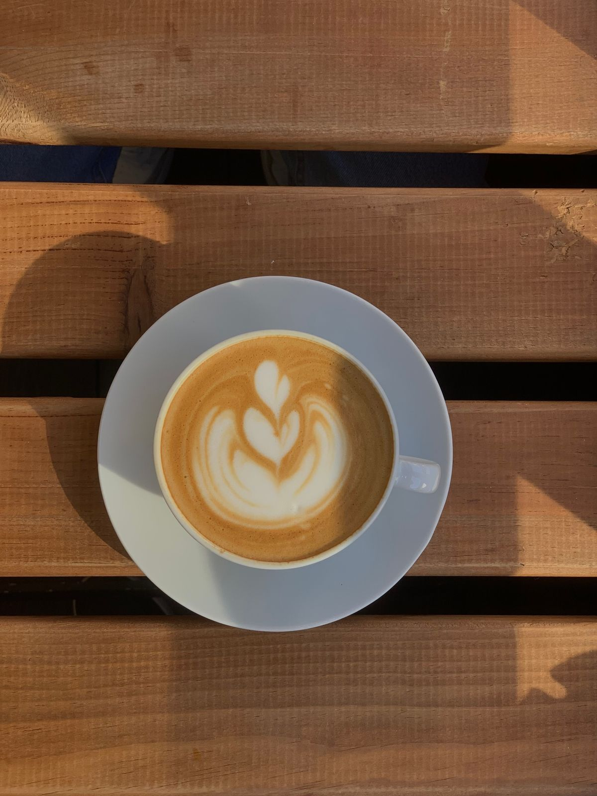
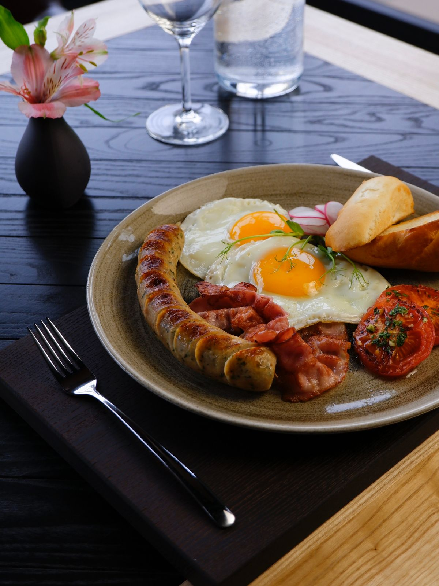
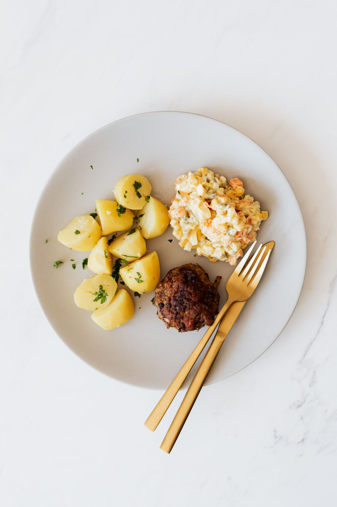
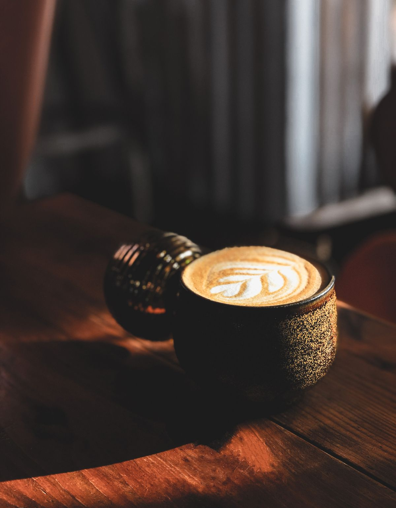
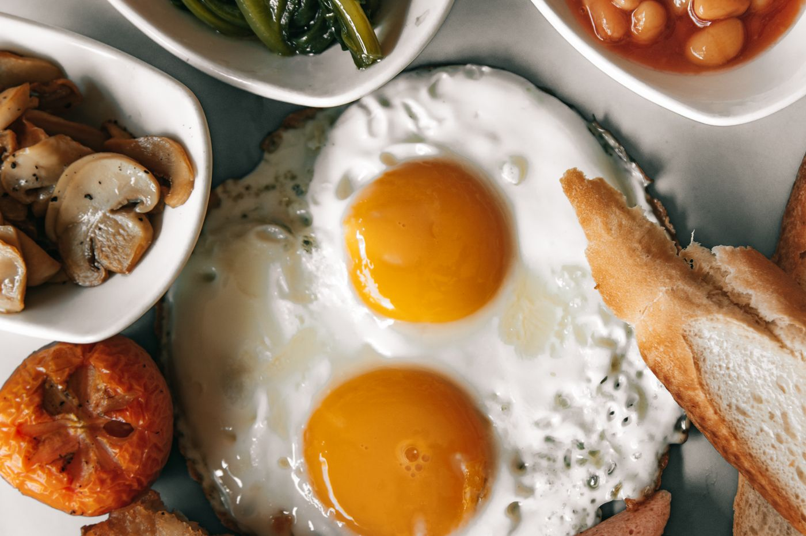
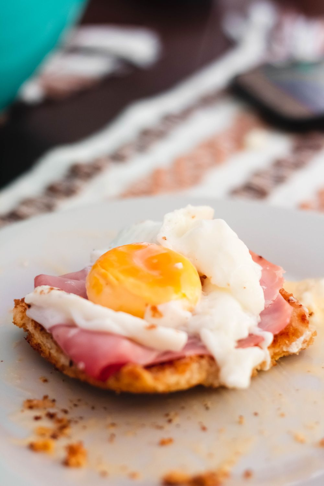

Kavárna a bistro v Králově Poli
Otevřeno každý den 7:30–22:00 na ulici Jarmily Kurandové 8.




Otevíráme. Den začíná kávou.
Brunch. Od 8:30, úterý až neděle.
Oběd. Od 11:30, dokud se nevyprodá.
Odpoledne. Máme otevřeno.
Večer. Otevřeno do 22:00.
Brunch
Podáváme od úterka do neděle, dopoledne od 8:30.
Míchaná vajíčka s krůtí šunkou
míchaná vajíčka, krůtí šunka, parmezán, šlehaný sýr, lehký salát, kváskový chléb
Turecká vejce
zastřená vejce, náš jogurt s kořením, kopr, chilli máslo, kváskový chléb
RAST talíř
míchaná vajíčka, grilované klobásky, slanina, žampiony, fazole, kváskový chléb
Topinka s vajíčkem
topinka s česnekem, krůtí šunka, gouda, šlehaný sýr, volské oko
Bavorské klobásky
3 druhy omáček, kváskový chléb, kysané zelí


Obědové menu
Od 11:30, dokud se nevyprodá.
| Den | Jídlo | Klasická | Velká |
|---|---|---|---|
| Po | Zeleninové karbanátky se sýrem, bylinková omáčka, brambory | 165 Kč | 195 Kč |
| Út | Vepřová kýta na smetaně, knedlík | 160 Kč | 190 Kč |
| St | Smažená ryba, pečené brambory, naše majo | 170 Kč | 210 Kč |
| Čt | Pečené kuře, nádivka, rýže, okurkový salát | 165 Kč | 210 Kč |
| Pá | Švédské kuličky, americké brambory, omáčka | 170 Kč | 215 Kč |
Kde nás najdete
Otevřeno máme každý den až do 22:00.
612 00 Brno-Královo Pole
- Pondělí – neděle
- 7:30 – 22:00
- Brunch
- út – ne od 8:30
- Obědy
- od 11:30
Najdete nás i v Žabovřeskách jako RAST garden bistro.